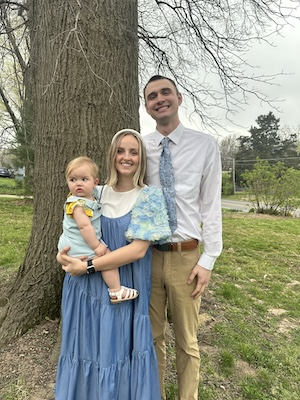

WDD 131 - Dynamic Web Fundamentals - Evelyn Abplanalp Thomas
About Me
My name is Evelyn!
I was born and raised in Arizona.
I married my sweetheart, Clancy, in 2021 and we just celebrated our daughter Billye's first birthday.
I love making music and being creative.
I received my associates degree from BYU-Idaho last year, before moving to Kansas City, Missouri where my husband now works.
After a short break, I am jumping back into school to finish my bachelors degree in Software Engineering, while raising my little girl.
